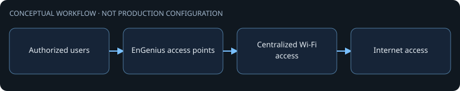

Network infrastructure / Completed
Centralized Wireless Access
Centralized head office Wi-Fi access to restrict unauthorized devices.
Business context
The head office required centralized Wi-Fi access to restrict unauthorized devices from accessing the internet.
Scope and responsibilities
- Implemented centralized Wi-Fi access using EnGenius access points for head office.
- The stated purpose was to restrict unauthorized devices from internet access.
Conceptual workflow

Illustrative workflow based on résumé descriptions; not an actual production diagram.
Business value
Centralized access supports controlled network use. Access point count, authentication mechanism, wireless controller and policy details were not supplied.
Evidence to add when approved
- Approved redacted access point dashboard
- Confirmed model and deployment count
- Sanitized access control policy